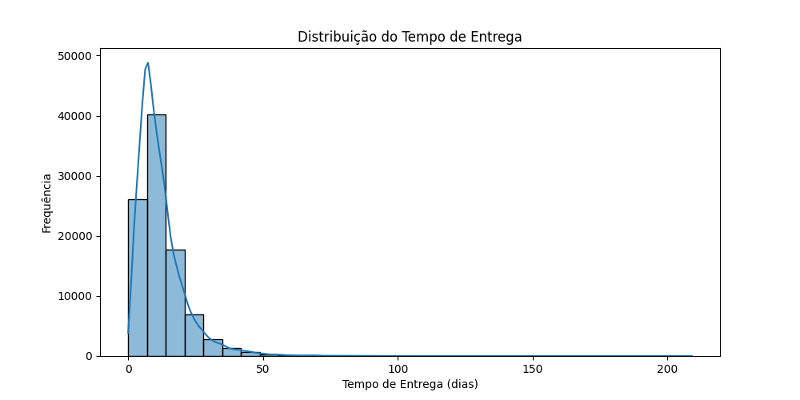

Exploratory Data Analysis Report
This report presents the results of the exploratory data analysis conducted on the dataset of the Brazilian e-commerce.
Context
The Brazilian e-commerce dataset contains information about orders, products, reviews, and other data. The aim of exploratory analysis is to better understand sales patterns, customer satisfaction, and profitability by product category.
Logistics Analysis
Delivery Time Statistics
Mean: 12.09 days
Median: 10.00 days
Delivery Delay Statistics
Mean: -11.88 days
Median: -12.00 days
Visualizations
Sales Performance Analysis (Sales Volume by Category)
This graph shows the total sales volume by product category. The categories with the highest sales volume are Health & Beauty and Gifts & Watches.

Customer Satisfaction Analysis (Product Reviews)
This graph displays the distribution of product reviews. Most reviews are in the 5 range with a small percentage of negative reviews.

Financial Analysis (Estimated Profitability by Category)
Conclusions
Based on the analysis conducted, we can conclude that products in health_beauty and watches_gifts categories demonstrate a high volume of sales, indicating significant demand for these items. Additionally, most product reviews fall within the 5 range, suggesting a high level of customer satisfaction. Regarding profitability, the health_beauty and watches_gifts categories appear to be the most profitable, indicating priority areas for focus and investment.